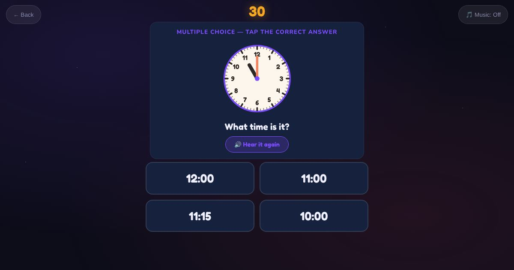

For teachers and tutors
About Clock
An interactive analogue clock with hour and minute hands you can drag. Rounds take turns: read the clock and choose the time, then set the clock to a time, like "Set the clock to 3:15, quarter past three". It moves from o'clock to half past, then quarter past and quarter to, then 5-minute steps. The wrong choices are the real mistakes, like reading the hands the wrong way round.

How to play
- Read the clock and tap the time.
- Drag the hour and minute hands to the time shown.
- Check it.
Play it as a class
Choose Clock in the Teacher Game. The clock shows big on the projector and every student sets the hands on their own phone.